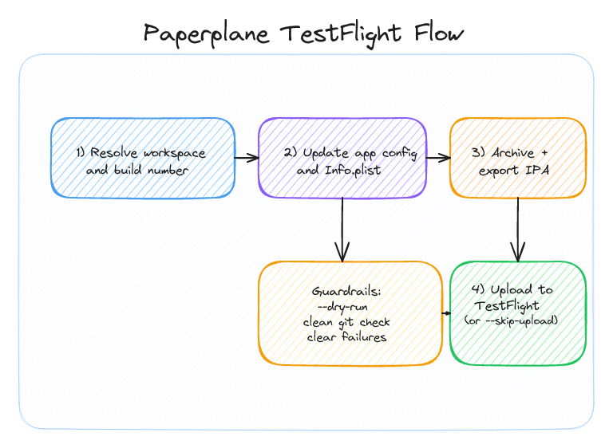

From Manual TestFlight Chaos to One Command
18/02/2026
Turning a tedious iOS release routine into a minimal, deterministic CLI flow for TestFlight, without using Fastlane, EAS, or Xcode.
Shipping to TestFlight sounds simple, and it is, having done it for years with React Native, but in practice it is a chain of small steps that's kinda annoying. I wanted one command that makes the path explicit: bump build number, archive/export, then upload, all automatically, without using Fastlane, EAS, or Xcode.
What this solves
While building another app, I got tired of opening Xcode, archiving, and uploading to TestFlight manually. With paperplane, the checklist of what to do is encoded in the CLI, so the command does the routine work the same way every time.
Why I built this minimally
This started as an experiment: could I get a useful release tool with the smallest possible surface area? I was not trying to build a release platform. I just wanted a local tool I could trust and understand end-to-end, without relying on any other tools or frameworks.
Fastlane and EAS are strong tools, but for this project I wanted fewer moving parts, no big framework layer, and a straightforward local flow.
BASH
npx react-native-paperplane --dry-run
npx react-native-paperplaneWhat the command actually does

1. Finds your iOS workspace and release scheme.
2. Reads the current build number from app config (text-first parsing).
3. Updates the app config build number and Info.plist CFBundleVersion.
4. Creates an archive and exports an IPA to a deterministic output path.
5. Uploads to TestFlight through iTMSTransporter (unless --skip-upload is set).
Preflight checks as a contract
The most important part is not the happy path, it is the guardrails. If the workspace is missing, build number parsing fails, or the repo is dirty (without --allow-dirty), the command fails early with a clear error.
BASH
paperplane --dry-run
paperplane --build-number 42
paperplane --skip-uploadWhat v1 intentionally does not do
This version is intentionally narrow: no Android flow, no App Store Connect API key auth, and no CI-focused reporting layer. Keeping scope tight made the first version easier to reason about and safer to run. You do have to install Transporter and create a app-specific password for it, but that is a one-time setup.
Conclusion
The core win is simple, fast, and boring releases. One command, predictable output, and fewer opportunities for human error. It might not be for everyone or their particular project, but it's a micro-utility that's saving me time! Thanks for reading!